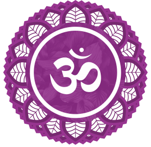

_
- Localização:
- Cor associada:
- Elemento associado:
- Função principal:

Sahasrara
- Localização:
No topo da cabeça, como uma coroa.
- Cor associada:
Violeta ou branco
- Elemento associado:
Além dos elementos
- Função principal:
Conexão com o divino e consciência universal.
Quando equilibrado:
- Unidade, paz e iluminação
Quando em desequilíbrio:
- Desconexão espiritual
Como ativar:
- Meditação, silêncio, estudo espiritual
Mantra:
- Silêncio ou AUM sutil
Ajna (Terceiro Olho)
- Localização:
Entre as sobrancelhas.
- Cor associada:
Anil ou azul-índigo
- Elemento associado:
Luz
- Função principal:
Intuição, visão interior, percepção além da mente racional.
Quando equilibrado:
- Intuição aguçada, clareza mental, visão espiritual
Quando em desequilíbrio:
- Ilusões, confusão, falta de foco
Como ativar:
- Meditação com foco entre os olhos, visualização criativa
Mantra:
- OM
Vishuddha (Laríngeo)
- Localização:
Garganta.
- Cor associada:
Azul claro
- Elemento associado:
Éter / Som
- Função principal:
Comunicação, expressão, verdade.
Quando equilibrado:
- Comunicação clara, autenticidade, escuta ativa
Quando em desequilíbrio:
- Mentiras, timidez, dificuldade em se expressar
Como ativar:
- Canto, escrita, falar verdades
Mantra:
- HAM
Anahata (Cardíaco)
- Localização:
Centro do peito.
- Cor associada:
Verde (ou rosa, em algumas tradições)
- Elemento associado:
Ar
- Função principal:
Amor incondicional, compaixão, perdão.
Quando equilibrado:
- Amor, empatia, relações saudáveis
Quando em desequilíbrio:
- Mágoas, ressentimento, frieza
Como ativar:
- Práticas de gratidão, conexão com os outros, generosidade
Mantra:
- YAM
Manipura (Plexo Solar)
- Localização:
Região do estômago, acima do umbigo.
- Cor associada:
Amarelo
- Elemento associado:
Fogo
- Função principal:
Autoconfiança, poder pessoal, vontade.
Quando equilibrado:
- Determinação, autoestima, ação consciente
Quando em desequilíbrio:
- Insegurança, controle excessivo, raiva
Como ativar:
- Exercícios físicos, respiração abdominal, metas pessoais
Mantra:
- RAM
Svadhisthana (Sacral)
- Localização:
Região abaixo do umbigo.
- Cor associada:
Laranja
- Elemento associado:
Água
- Função principal:
Prazer, sexualidade, emoções.
Quando equilibrado:
- Vitalidade, criatividade, relações saudáveis
Quando em desequilíbrio:
- Bloqueio emocional, culpa, compulsões
Como ativar:
- Dança, arte, conexão com o corpo
Mantra:
- VAM
Muladhara (Raiz)
- Localização:
Base da coluna vertebral.
- Cor associada:
Vermelho
- Elemento associado:
Terra
- Função principal:
Segurança, estabilidade, sobrevivência.
Quando equilibrado:
- Segurança, presença, base sólida
Quando em desequilíbrio:
- Medo, instabilidade, sensação de abandono
Como ativar:
- Caminhadas, conexão com a natureza, práticas de enraizamento
Mantra:
- LAM